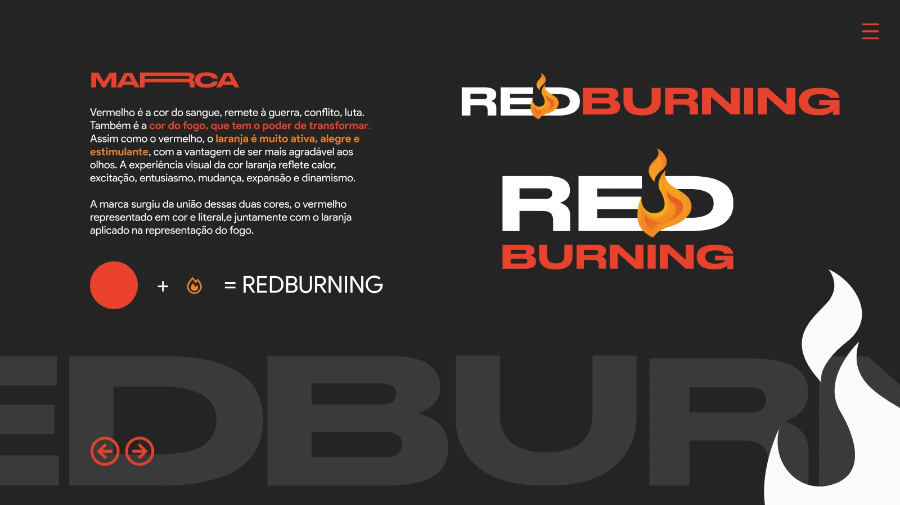

Energia que
ganha forma.
Uma identidade construída a partir do vermelho e da representação do fogo. Marca, tipografia e diretrizes se conectam em uma linguagem visual de forte presença.

Cor e símbolo.
Uma mesma intenção.
O manual relaciona o vermelho à intensidade e à transformação, enquanto o laranja aparece associado ao calor, ao entusiasmo e ao dinamismo. A chama reúne essas referências e participa da composição da marca.
A apresentação mostra duas assinaturas: uma horizontal e outra em composição vertical. Em ambas, o símbolo mantém sua relação com o nome Redburning.
Assinaturas
Composições horizontal e vertical organizam nome e símbolo em diferentes proporções.
Tipografia
O manual indica Stretch Pro para a marca e Product Sans para os textos de apoio e demais aplicações.
Cores
Vermelho, laranja e tons de apoio compõem a identidade apresentada. A reprodução deve seguir as especificações do manual.
Presença com
consistência.
Além da apresentação da marca, o documento inclui orientações de redução, área de proteção, versões monocromáticas, tipografia e cores institucionais. Essas regras organizam a reprodução da identidade em diferentes situações.
O arquivo também apresenta uma aplicação em embalagem. O recorte visual desta primeira apresentação concentra-se na prancha de conceito e nas assinaturas da marca.
Explorar o manual no Figma